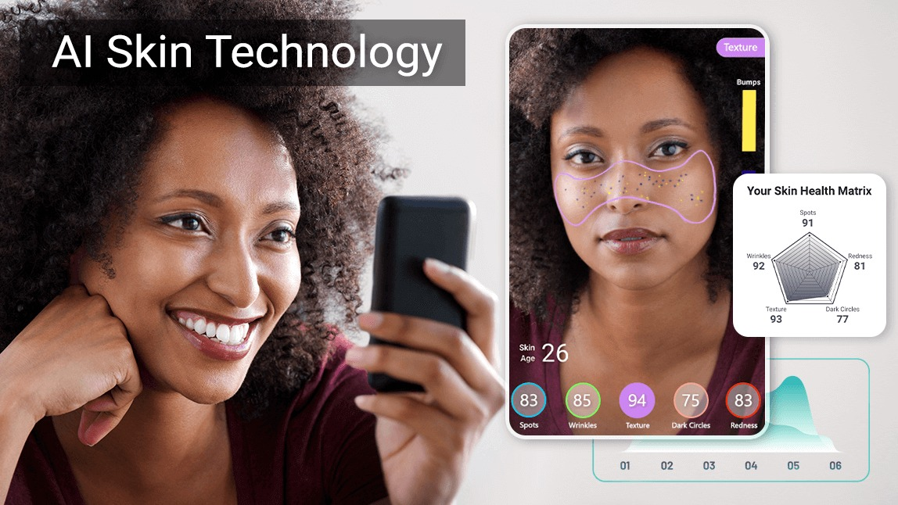
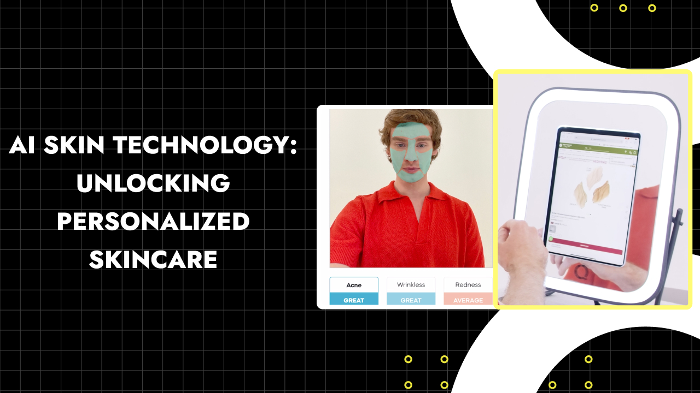

Your natural beauty,
enhanced by AI and tailored for you

Understanding the challenges with generic skincare

AI-powered skincare that adapts to your unique requirements
Environmental and Lifestyle Induce specific Skin Stress: even a healthy skin faces varying levels of environmental stress (e.g., pollution, UV exposure, blue light, extreme weather)
Our skin has different needs depending on seasons (e.g., winter dryness, summer oiliness) and even time of day (e.g., repair at night, protection in the morning). Generic routines often fail to address these dynamic changes.
Phototypes and skin diseases, play a crucial role in personalized skincare by guiding the selection of tailored products and treatments
Data Acquisition - Analysis - Final product
An AI cloud based proprietary software ecosystem that is integrated with the Opera device and transform input from biometrical parameter into a personalyzed recipee for the perfect skincare set.
A Robotic system fully integrated with our software ecosystem Simphonie that is composed by an input module and a robotic module for automatic skincare product preparation.
An app leveraging facial scanning, deep learning, and real-time data to create tailored skincare solutions.
Leading scientists and researchers driving innovation in personalized skincare
Condensed Matter Physicist
Italian condensed matter physicist specializing in nanoscience, superconducting spintronics, and 2D materials. He earned his Ph.D. in Physics from the Universidad Complutense de Madrid, focusing on ferromagnetism and superconductivity in oxide interfaces. He continued his research at the NEST Laboratory (Scuola Normale Superiore) and later at Massachusetts Institute of Technology (MIT), working on superconducting spintronics and thin film deposition.
As a Marie Skłodowska-Curie Global Fellow, he led the EuSuper project, developing superconducting magnetic RAM for next-generation supercomputers. His work is widely recognized, with numerous publications in high-impact journals.
Currently, he applies his expertise at Thales Alenia Space, driving innovation in advanced materials and quantum technologies.
Associate Professor of Human Embryology
Prof. Mattia Capulli is Associate Professor of human Embriology at University of L’Aquila in Italy and co-founder of Dante Genomics CORP and has served as Chief Scientific Officer of the Dante Genomics Group since December 2016. Prior to that he was a PostDoc Fellow at Columbia University Medical Center in New York.
He is a medical Biotechnologist by training, he continued his education in the Biotechnological Sciences, and he obtained a PhD on Biotechnology Prof. Capulli, is one of the pioneers to theorize and drive the application of the lean six sigma approach to lab analysis, especially to the sequencing process.
Prof Capulli is author of more than 30+ peer-reviewed scientific articles (LINK: https://pubmed.ncbi.nlm.nih.gov/?term=capulli+m&filter=years.2003-2022&sort=date) and has been awarded 18 national and international scientific awards and 1 business award.
Applied Physicist, AI Scientist
Italian physicist Dr. Alessandro Sciarra specialises in cybersecurity, data science, and medical imaging, with an emphasis on AI and machine learning applications. As a Marie Skłodowska-Curie Fellow at Otto von Guericke University, he earned his Ph.D. in Physics and AI, working on the relationship between medical imaging and artificial intelligence. After earning his PhD, he went on to work for a number of tech firms, such as DEAS S.p.A. and DuskRise S.r.l., where he developed AI models for open-source threat intelligence and malware detection.
Dr. Sciarra, a thought leader in the sector, has played a key role in developing novel strategies to improve medical imaging procedures using data-driven and non-AI solutions. Numerous articles in esteemed journals and speeches at international conferences attest to his contributions to academia.
He currently leads projects that use AI applications.
Biotechnologist, Sales Leader
Mrs Isabella Capannolo began her career as a biotechnologist but quickly transitioned into sales. She served as Regional Sales Leader at Dante Genomics, a multinational genetic company, where she successfully coordinated customer relations and upheld the highest service standards.
Following this experience, Isabella co-founded CTO Studio, where she assumed the role of CEO, overseeing the activities of medical and biological professionals. During the COVID-19 pandemic, she played a pivotal role in public health by managing a highly successful drive-in testing collection point. Under her guidance, the site became one of the most efficient in Italy, serving thousands of customers with exceptional quality and safety standards.
With extensive hands-on expertise in managing high-skilled professionals, Isabella is recognized for her ability to cultivate cohesive teams, drive operational excellence, and ensure full dedication to projects. Her leadership is defined by strategic vision, adaptability, and an unwavering commitment to innovation and quality.
Lawyer
Mr. Lorenzo di Marzio: a lawyer and legal expert with over 30 years of experience, Lorenzo Di Marzio stands out in bankruptcy law, administrative law, and contract law.
He has held prominent roles as Bankruptcy Trustee and Judicial Administrator at the Courts of L'Aquila, Teramo, and Ascoli Piceno, providing specialized advice to industrial groups and local public authorities in complex procedures such as public tenders, expropriations, and urban planning.
Alongside his professional practice, Lorenzo has contributed to educating new generations by serving as a lecturer and expert in Commercial Law at the Faculty of Economics in L'Aquila. His career is further enriched by institutional roles such as serving as a Provincial Councilor and performing oversight functions for FI.R.A. and ARAP.
Start protecting your skin today!